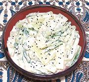

|
Chard Stems with TahiniLebanon - Selek in Tahineh | ||||
| Serves: Effort: Sched: DoAhead: |
4 salad * 30 min Yes |
In Lebanon and Turkey. stuffed chard leaves are very popular, but that leaves a lot of stems. This salad recipe makes good use of those stems, regardless of what recipe they are left over from. | |||
|
|
1 ar 1/2 ----- ar |
# c --- |
Chard Stems (1) Salted Water Tahini Dressing (2) -- Garnish Nigella seeds or Pomegranate seeds |
Make - (30 min - 5 min work (exclusive of making the dressing))
|